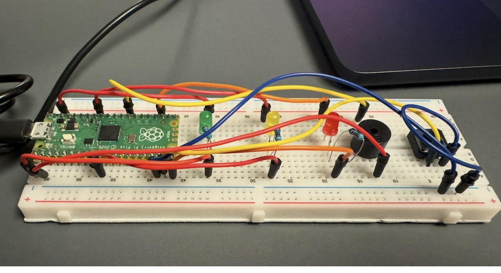
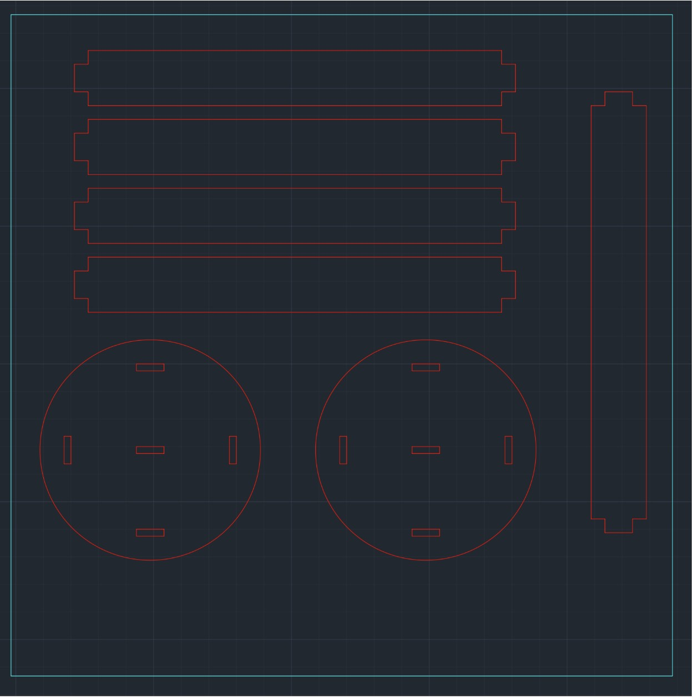
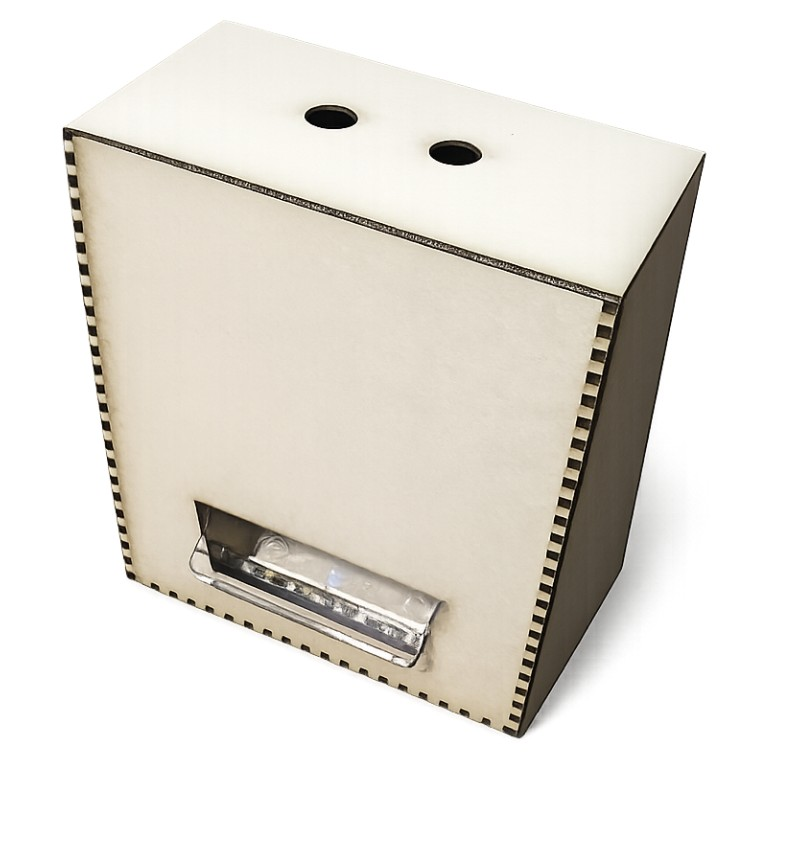
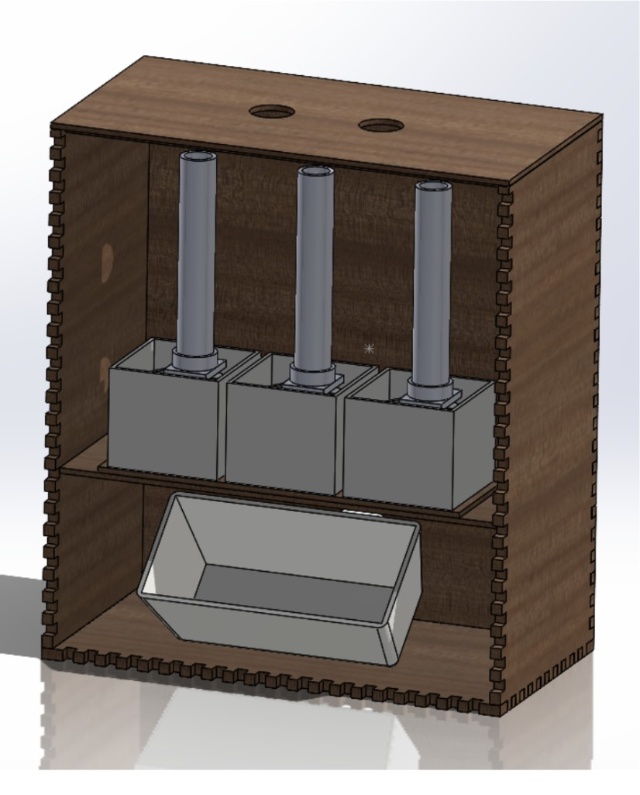
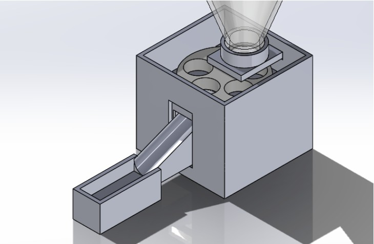

Investigating the OceanGate Disaster
Group 2 · Fall 2025
with J. Garces & T. Attarian
A three-stage teaching exhibit that reverse-engineers the 2023 Titan submersible implosion for a 4th/5th-grade audience — walking younger students through how substandard materials, schedule pressure, and repeated dives to depth compound into catastrophic failure, and how an engineer would have caught it.


Build — three parallel stages
Raspberry Pi Pico, LED depth ladder + buzzer that fires as simulated dive depth climbs past safe thresholds.
Laser-cut wood/cardboard models in AutoCAD showing how the Titan's carbon-fiber hull behaved under repeated pressure cycling — sole owner of this stage end to end.
Interactive command-line story that walks the "pilot" through each depth stage's decision points to the implosion.
What I owned
I led Stage 2 solo: modeling the pressure hull and hull-material comparisons in AutoCAD, laser-cutting the physical wood/cardboard demonstration piece, and writing the sections of the final report explaining why the Titan's hand-laid carbon fiber under-performed proven submersible materials like titanium and forged steel.
Engineering process
Compared three candidate disasters; chose OceanGate for recency and public familiarity. Built an empathy chart around the audience to pick tangible, hands-on elements.
Drafted the three-stage concept; peer feedback pushed the Pico stage to be longer and more failure-resistant to a child mashing the button.
Cut and assembled the CAD stage in 3mm plywood; wrote and tested the Python narrative and Pico firmware in parallel, tracked against a Gantt chart.
21-page technical report covering the engineering-design process, decision-matrix analysis, and full appendix of code and diagrams.
Takeaway
This was my first time carrying a fabrication stage start to finish on my own — not just modeling the hull in AutoCAD, but owning the laser-cutter time, the material tolerances, and explaining the "why" behind the design to teammates who hadn't touched CAD before. It's also where I got comfortable treating a group project like a real handoff: build something someone else can pick up and present without me in the room.
Skills applied
EasyDose — Automated Pill Dispenser
Team 3 · Spring 2026
with J. Poyer, I. Moody & T. Gramer
A self-contained device that dispenses pre-loaded medication at scheduled times for elderly and assisted-living patients — built to cut nursing-home dosing errors, remove the need for daily manual prep, and give residents with limited dexterity independent access to their own medication.


Design requirements
| Requirement | Metric | Target |
|---|---|---|
| Dispensing accuracy | % successful dispenses | > 99% |
| Cost | Total project cost | < $75 |
| Time-keeping accuracy | Drift vs. accepted time | < 60s |
Design evolution

System & build
| System | Detail |
|---|---|
| Enclosure | Laser-cut MDF housing, chosen for low cost and minimal warping |
| Dispensing mechanism | 3D-printed PLA tube-and-dropper, one pill per actuation |
| Actuation | Stepper motors, one per dispenser channel |
| Control | Raspberry Pi Pico + real-time clock for scheduling accuracy |
| Interface | Custom desktop GUI (Windows / macOS / Linux) for staff to enter patient, dosage & schedule |
| Accessibility | Audio + visual dispense alerts for sensory-impaired users |
Methods used
Takeaway
The jump from the funnel to the tube design is the part I'm proudest of: our first version worked in theory but kept failing in practice, and getting from an 88% success rate to over 99% meant actually sitting with the failure mode instead of tweaking around it. It's also the first project where I had to weigh a design decision against who'd actually be using the device — an elderly patient with limited dexterity, not just a grader.
What I'd improve next
Given more time and budget, the team identified clear next steps: a low-pill sensor, a tray-confirmation sensor to verify a dose was actually taken, food-safe plastic for the dispensing path, and battery backup for power-loss resilience.